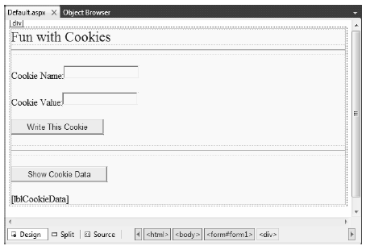

The next state management technique we’ll examine is the persisting of data within a cookie, which is often realized as a text file (or set of files) on the user’s machine. When a user joins a given site, the browser checks to see whether the user’s machine has a cookie file for the URL in question and, if so, appends this data to the HTTP request.
The receiving server-side web page can then read the cookie data to create a GUI based on the current user preferences. I’m sure you’ve noticed that when you visit certain of your favorite web sites, they somehow “just know” the sort of content you wish to see. The reason (in part) may have to do with a cookie stored on your computer that contains information relevant to a given web site.
The receiving server-side web page can then read the cookie data to create a GUI based on the current user preferences. I’m sure you’ve noticed that when you visit certain of your favorite web sites, they somehow “just know” the sort of content you wish to see. The reason (in part) may have to do with a cookie stored on your computer that contains information relevant to a given web site.
Note The exact location of your cookie files will depend on which browser and operating system you happen to be using.
The contents of a given cookie file will obviously vary among URLs, but keep in mind that they are ultimately text files. Thus, cookies are a horrible choice for maintaining sensitive information about the current user (such as a credit card number, password, and the like). Even if you take the time to encrypt the data, a crafty hacker could decrypt the value and use it for evil purposes. In any case, cookies do play a role in the development of web applications, so let’s check out how ASP.NET handles this particular state management technique.
First of all, understand that ASP.NET cookies can be configured to be either persistent or temporary. A persistent cookie is typically regarded as the classic definition of cookie data, in that the set of name/value pairs is physically saved to the user’s hard drive. A temporary cookie (also termed a session cookie) contains the same data as a persistent cookie, but the name/value pairs are never saved to the user’s hard drive; rather, they exist only while the browser is open. Once the user shuts down the browser, all data contained in the session cookie is destroyed.
The System.Web.HttpCookie type is the class that represents the server side of the cookie data (persistent or temporary). When you wish to create a new cookie in your web page code, you access the Response.Cookies property. Once the new HttpCookie is inserted into the internal collection, the name/value pairs flow back to the browser within the HTTP header.
To check out cookie behavior firsthand, create a new Empty Web Site (named CookieStateApp) and create the UI of the first Web Form (which you will need to insert) displayed in Figure 34-8.
Figure 34-8 The UI of CookieStateApp
Within the first button’s Click event handler, build a new HttpCookie and insert it into the Cookie collection exposed from the HttpRequest.Cookies property. Be very aware that the data will not persist itself to the user’s hard drive unless you explicitly set an expiration date using the HttpCookie.Expires property. Thus, the following implementation will create a temporary cookie that is destroyed when the user shuts down the browser:
protected void btnCookie_Click(object sender, EventArgs e) { // Make a temp cookie. HttpCookie theCookie = new HttpCookie(txtCookieName.Text, txtCookieValue.Text); Response.Cookies.Add(theCookie); }
However, the following generates a persistent cookie that will expire three months from today:
protected void btnCookie_Click(object sender, EventArgs e) { HttpCookie theCookie = new HttpCookie(txtCookieName.Text, txtCookieValue.Text); theCookie.Expires = DateTime.Now.AddMonths(3); Response.Cookies.Add(theCookie); }
Recall that the browser is the entity in charge of accessing persisted cookies when navigating to a previously visited page. If a browser decides to send a cookie to the server, you can access the incoming data in your *.aspx page via the HttpRequest.Cookies property. To illustrate, implement the Click event handler for the second button like so:
protected void btnShowCookie_Click(object sender, EventArgs e) { string cookieData = ""; foreach (string s in Request.Cookies) { cookieData += string.Format("<li><b>Name</b>: {0}, <b>Value</b>: {1}</li>", s, Request.Cookies[s].Value); } lblCookieData.Text = cookieData; }
If you now run the application and click your new button, you will find that the cookie data has indeed been sent by your browser and accessed successfully in your *.aspx code at the server.
Source Code The CookieStateApp web site is included under the Chapter 34 subdirectory.